* स्वेदबिंदूं इरिगेशन *
आय.एस.आय. नॉन.आय.एस.आय . ठिबक सिंचन संच,
पी.व्ही.सि. पाईप फिटींग,अमित ठिबक
ई.
साहित्य होलसेल भावात मिडेल .
पत्ता - आदर्श नगर ,बुलढाणा रोड ,मलकापूर
प्रो प्रा स्वप्नील पाटील
प्रो प्रा प्रतीक चौधरी
************************|| इरिगेशन (सिंचन ) म्हणजे काय ? ||************************
सिंचन ही पिकांना त्यांच्या पाण्याची गरज पूर्ण करण्यासाठी कृत्रिमरित्या पाणी देण्याची
प्रक्रिया
आहे. सिंचनाद्वारे पिकांना पोषक तत्वे देखील पुरवली जाऊ शकतात.
सिंचनासाठी पाण्याचे विविध स्त्रोत
म्हणजे
विहिरी, तलाव, तलाव, कालवे, कूपनलिका आणि अगदी धरणे. सिंचन वाढ आणि विकास, उगवण आणि इतर संबंधित कार्यांसाठी
आवश्यक आर्द्रता देते.
वेगवेगळ्या पिकांसाठी सिंचनाची वारंवारता, दर, रक्कम आणि वेळ वेगवेगळी असते आणि माती आणि ऋतूंच्या
प्रकारानुसार
देखील बदलते. उदाहरणार्थ, हिवाळ्यातील पिकांच्या तुलनेत उन्हाळी पिकांना जास्त पाणी लागते.
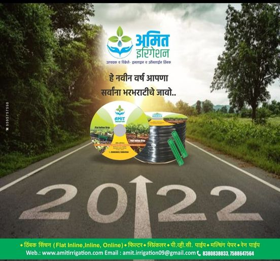
***********************|| अमित इरिगेशन ||************************
फ्लॅट इनलाइन, इनलाइन,
ऑनलाइन पार्श्व, खत टाकी,
रेन पाईप, सुपर क्लीन फिल्टर, सँड फिल्टर. उत्सर्जित पाईप्स (इनलाइन) IS :
13488 :2008 नुसार 12 मिमी
अंतरासह (30 सेमी ते 120 सेमी).
अंतरासह 16 मिमी (30 सेमी ते 120 सेमी). पी.ई. पार्श्व (ऑनलाइन) IS :
12786 : 1989 नुसार. 12 मिमी वर्ग
- II
16 मिमी वर्ग - II
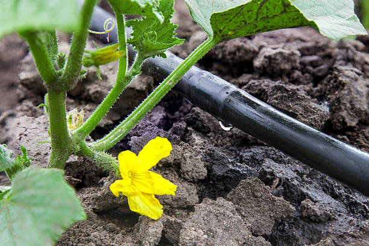
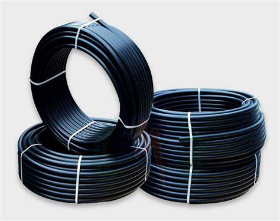
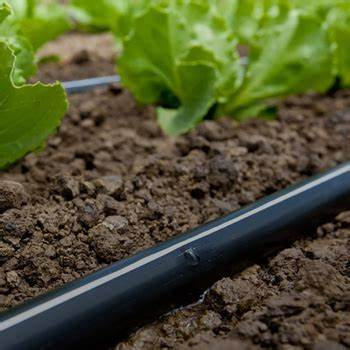
***********************|| फिनोलेक्स इरिगेशन ||************************
IS : १२७८६ : १९८९ नुसार उत्पादित UV स्थिरीकरणासाठी काळा रंग पार्श्वभाग आणि कोणतेही पर्यावरणीय प्रभाव नाही. व्हर्जिन एलएलडीपीईपासून “स्टेट ऑफ द आर्ट एक्सट्रुजन तंत्रज्ञान” वापरून उत्पादित. किमान मितीय सहिष्णुतेसह टिकाऊ पार्श्व. चांगले तयार केलेले अंतर्गत पृष्ठभाग घर्षण नुकसान कमी करते. मागणीनुसार प्री-पंच्ड ट्यूबिंगचा पुरवठा केला जाऊ शकतो. मागणीनुसार पर्यायी निळ्या अस्तर उपलब्ध.
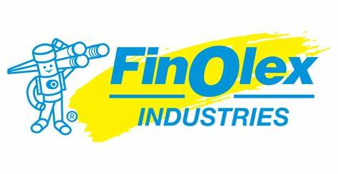
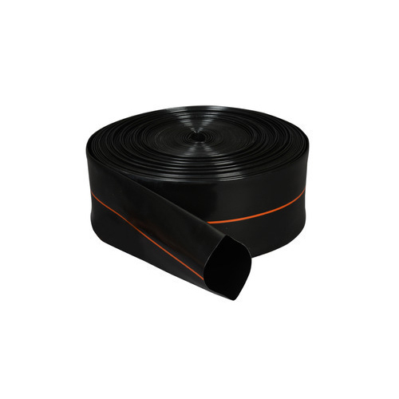
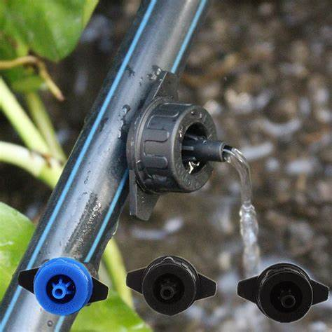

***********************|| स्प्रिंकलर ||************************
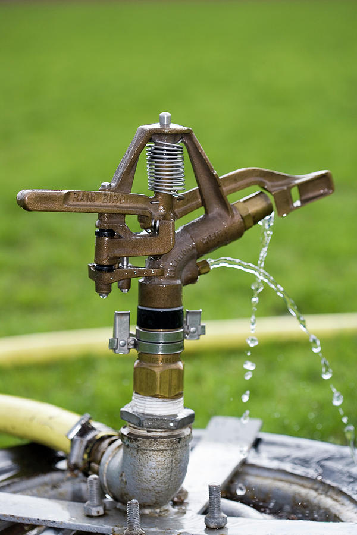
स्प्रिंकलर इरिगेशन टेक्नॉलॉजी, दाबाच्या सूक्ष्म सिंचनाची एक प्रणाली, जिथे सिंचनाचे पाणी पिकांच्या छतावर पावसाच्या सारख्याच प्रकारे वापरले जाते, सुमारे एक शतकापूर्वी जगात सादर केले गेले होते, परंतु मोठ्या क्षेत्रासाठी त्याचा वाढता वापर भूतकाळात सुरू झाला. काही दशके (शंकर एट अल., २०१५).
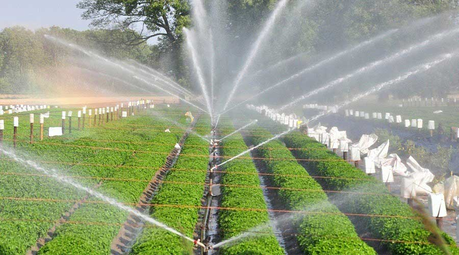
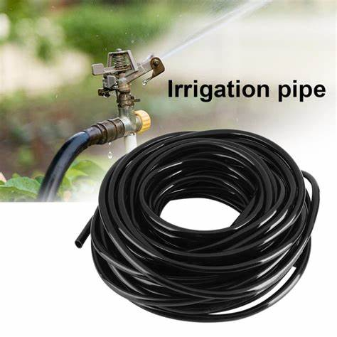
***********************|| पंप ||************************
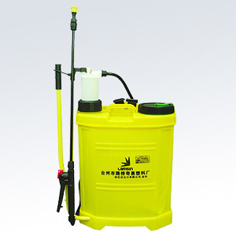
पंप हे एक यांत्रिक उपकरण आहे जे विविध द्रव एका ठिकाणाहून दुसर्या ठिकाणी हस्तांतरित करण्यासाठी वापरते. हे एक हायड्रॉलिक उपकरण आहे जे द्रव कमी ते उच्च पातळीपर्यंत उचलते आणि द्रव कमी ते उच्च-दाब असलेल्या भागात हलवते. पंप द्रवपदार्थाच्या यांत्रिक ऊर्जेचे प्रेशर एनर्जी (हायड्रॉलिक एनर्जी) मध्ये रूपांतर करून द्रव स्थानांतरित करतो.
***********************|| पीव्हीसी ||************************
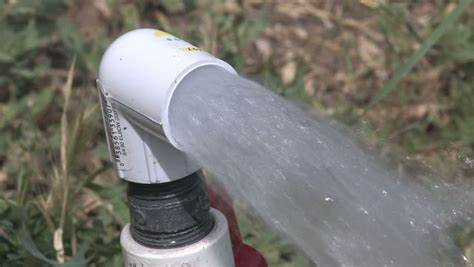
UPVC ड्रेनेज पाईप्सचा वापर पिण्याच्या पाण्याच्या पुरवठा लाईनसाठी आणि नळीच्या कामासाठी आच्छादन म्हणून केला जातो. नलिका विहिरी आणि UPVC डाउनपाइप्समध्ये राईझिंग मेन तयार करण्यासाठी देखील याचा मोठ्या प्रमाणावर वापर केला जातो. UPVC पाईप्स अधातू स्वरूपाचे असल्याने आणि सर्व प्रकारच्या धातूच्या गंजांना प्रतिरोधक असल्याने, ते डिस्चार्ज आणि सीवर पाइपलाइनसाठी सर्वोत्तम पर्याय बनवतात.
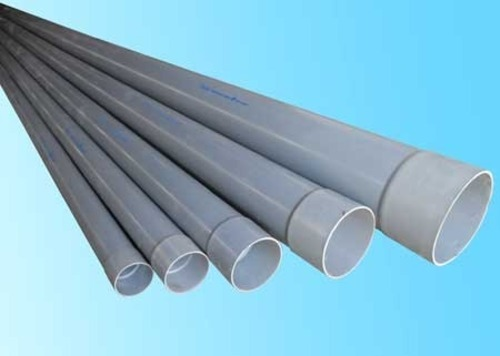
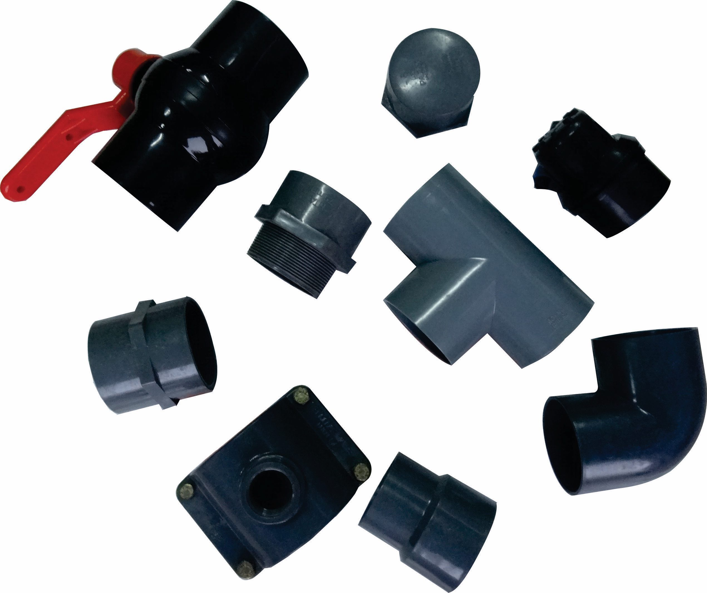